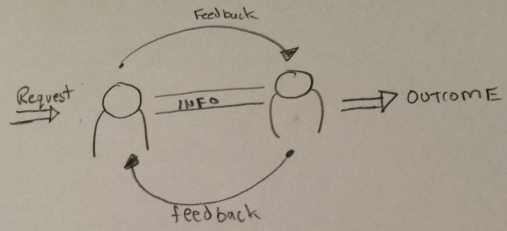
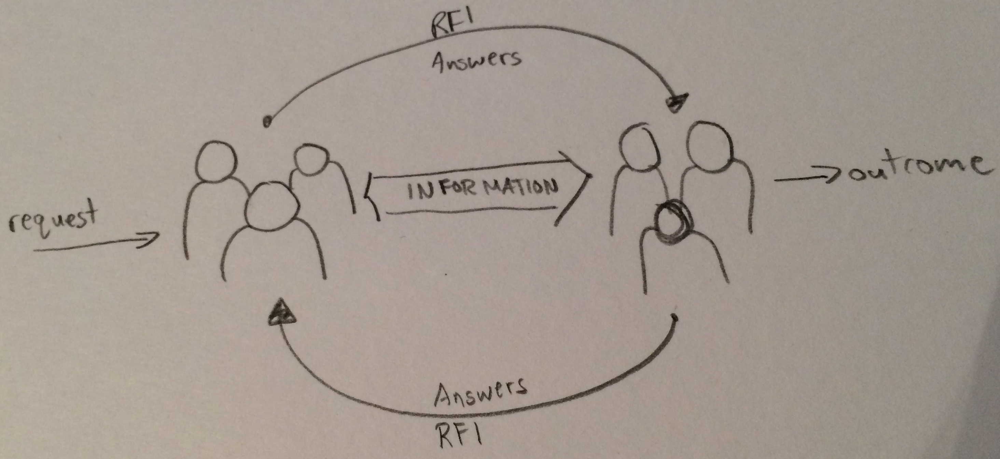
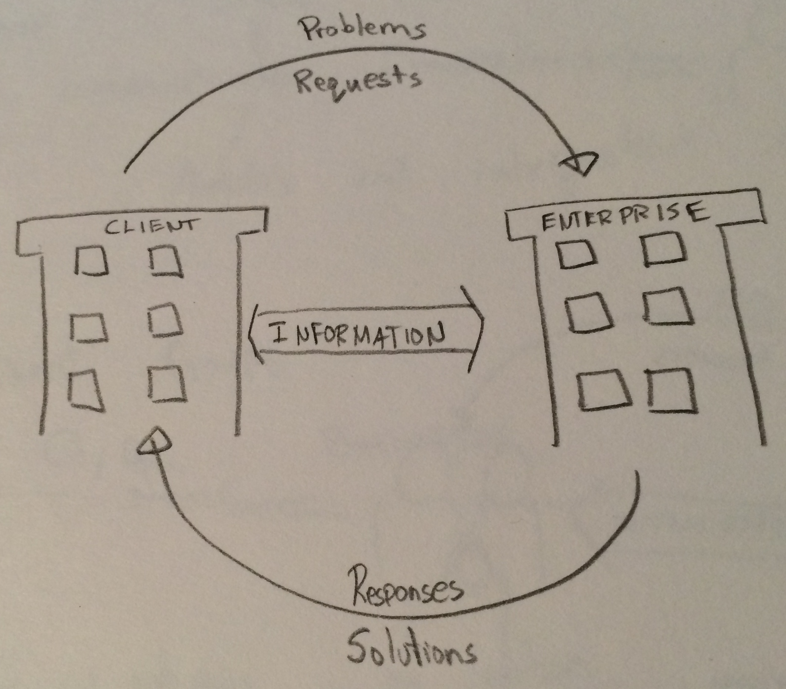
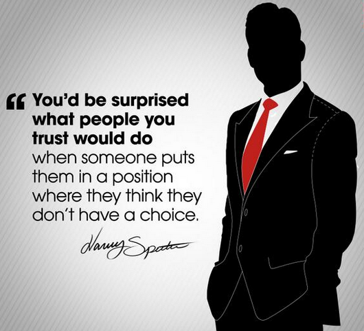
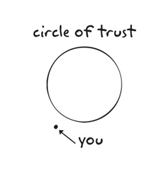
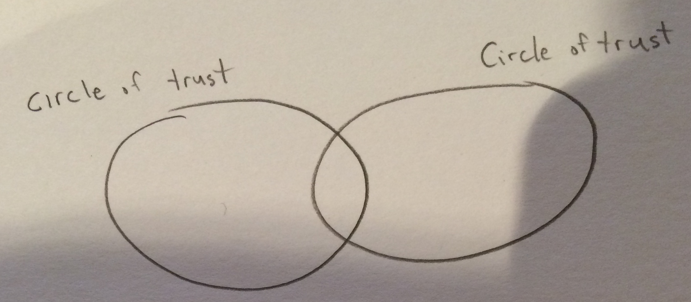
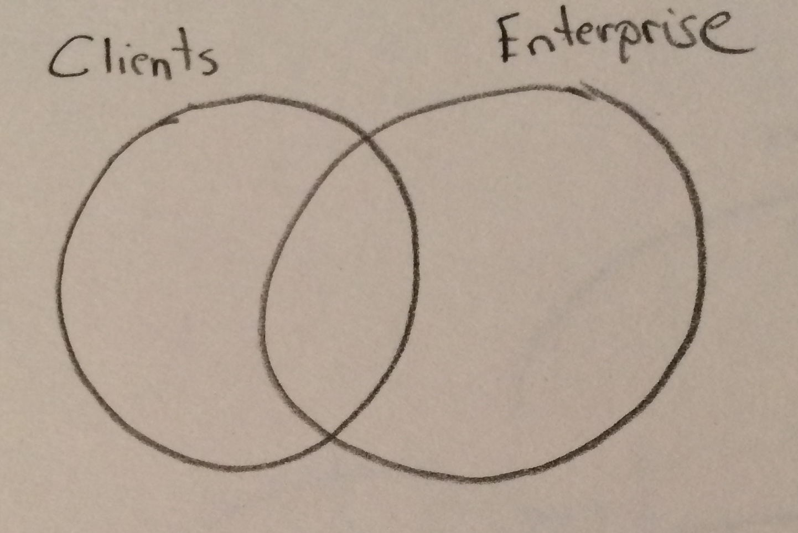
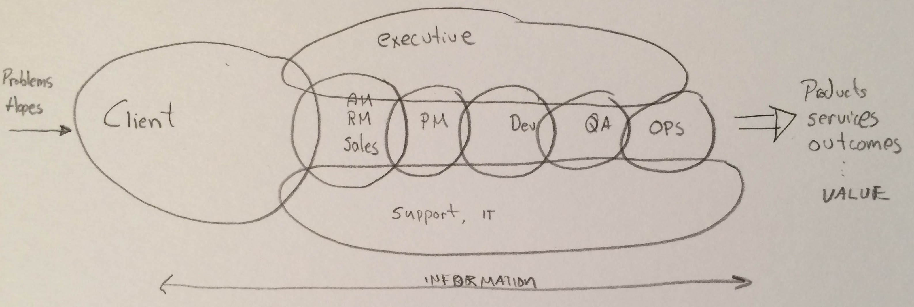
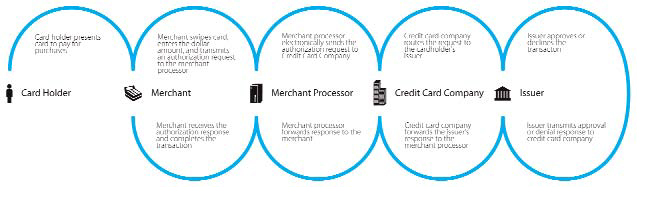

Your Business is a System Based on Trust
Created by Rob Woolley / @rdotwoolley
Introduction
I will put something meaningful here, I promise
The System
W. Edwards Deming
“Your business is a system.”
Donella Meadows
“Your business is a complex system.”
Humble, Molesky, O'Reilly
“Your enterprise is a complex adaptive system composed of people who share a common purpose.”
People are the System
Interlude of Individual Trust
The Talented Mr. Riley
The People
3 Categories:
Individual People
Teams
Enterprise
Individuals and Information Flow
Teams and Information Flow
Enterprise Information Flow
Interlude of Intra Team Trust
I want everyone on the team to take the pager...
The Road so Far
Information is flowing between people on three levels:
Individual People
Teams
Enterprise
People are connected in their common purpose through the flow of information. The information is conducted through communication and is galvanized by trust. So let's talk about trust.
State of Trust
“The key value in networking, and the one that is most problematic for Western managers, is trust. . . . High levels of trust help reduce transaction costs. . . . Trust reduces uncertainty about the future . . . . Trust lubricates the smooth, harmonious functioning of the organization by eliminating friction and minimizing the need for bureaucratic structures that specify the behavior of participants who do not trust each other. But trust does not come naturally. It has to be carefully structured and managed. (pp. 95-96)”
Trust is Important
Working Definition of Trust
“trust has been described as the ”social glue” that can hold different kind of organizational structures together (Atkinson & Butcher, 2003). Trust is an essential element in constructive human relationships. It creates togetherness and gives people a feeling of security. (Mishra & Morrissey, 1990.) Shamir & Lapidot (2003) suggest that trust is both an interpersonal and a collective phenomenon. Trust is expressed at three levels within an organization: individual, group and system level.”
Levels of Trust
Individual: will you do a thing for me in the future even if it doesn’t directly benefit you?
Teams: a group phenomena that structures predictability in individual response tied to a shared identity.
System: At the system level, trust is institutional and based on roles, systems or reputation, from which inferences are drawn about the trustworthiness of an individual.
I will try you out on one load to build trust.
In all matters, when you work for me, you must do exactly what you say you will do.
In this business with me, I do not buy a service. I buy a result.
If you say you will do a thing, you must do exactly that thing.
Interlude of Inter Team Trust
Global Cross Team Standup
The Circle of Trust
How we Often Think of Trust
Yet...
Trust is more like set theory and Venn Diagrams
Clients and Enterprise
The Trust Chain


Your enterprise is a complex adaptive system that is composed of people who share a common purpose. The people are interconnected by the flow of information which is facilitated by communication and galvanized by trust.
Slides
Not a coder? Not a problem. There's a fully-featured visual editor for authoring these, try it out at http://slides.com.
Point of View
Press ESC to enter the slide overview.
Hold down alt and click on any element to zoom in on it using zoom.js. Alt + click anywhere to zoom back out.
Touch Optimized
Presentations look great on touch devices, like mobile phones and tablets. Simply swipe through your slides.
Fragments
Hit the next arrow...
... to step through ...
... a fragmented slide.
Fragment Styles
There's different types of fragments, like:
grow
shrink
fade-out
current-visible
highlight-red
highlight-blue
Transition Styles
You can select from different transitions, like:
None -
Fade -
Slide -
Convex -
Concave -
Zoom
Themes
reveal.js comes with a few themes built in:
Black (default) -
White -
League -
Sky -
Beige -
Simple
Serif -
Blood -
Night -
Moon -
Solarized
Slide Backgrounds
Set data-background="#dddddd" on a slide to change the background color. All CSS color formats are supported.
Image Backgrounds
<section data-background="image.png">Tiled Backgrounds
<section data-background="image.png" data-background-repeat="repeat" data-background-size="100px">Video Backgrounds
<section data-background-video="video.mp4,video.webm">... and GIFs!
Background Transitions
Different background transitions are available via the backgroundTransition option. This one's called "zoom".
Reveal.configure({ backgroundTransition: 'zoom' })Background Transitions
You can override background transitions per-slide.
<section data-background-transition="zoom">Pretty Code
function linkify( selector ) {
if( supports3DTransforms ) {
var nodes = document.querySelectorAll( selector );
for( var i = 0, len = nodes.length; i < len; i++ ) {
var node = nodes[i];
if( !node.className ) {
node.className += ' roll';
}
}
}
}
Code syntax highlighting courtesy of highlight.js.
Marvelous List
- No order here
- Or here
- Or here
- Or here
Fantastic Ordered List
- One is smaller than...
- Two is smaller than...
- Three!
Tabular Tables
| Item | Value | Quantity |
|---|---|---|
| Apples | $1 | 7 |
| Lemonade | $2 | 18 |
| Bread | $3 | 2 |
Clever Quotes
These guys come in two forms, inline:
“The nice thing about standards is that there are so many to choose from”
and block:
“For years there has been a theory that millions of monkeys typing at random on millions of typewriters would reproduce the entire works of Shakespeare. The Internet has proven this theory to be untrue.”
Intergalactic Interconnections
You can link between slides internally, like this.
Speaker View
There's a speaker view. It includes a timer, preview of the upcoming slide as well as your speaker notes.
Press the S key to try it out.
Export to PDF
Presentations can be exported to PDF, here's an example:
Global State
Set data-state="something" on a slide and "something"
will be added as a class to the document element when the slide is open. This lets you
apply broader style changes, like switching the page background.
State Events
Additionally custom events can be triggered on a per slide basis by binding to the data-state name.
Reveal.addEventListener( 'customevent', function() {
console.log( '"customevent" has fired' );
} );
Take a Moment
Press B or . on your keyboard to pause the presentation. This is helpful when you're on stage and want to take distracting slides off the screen.
Much more
- Right-to-left support
- Extensive JavaScript API
- Auto-progression
- Parallax backgrounds
- Custom keyboard bindings